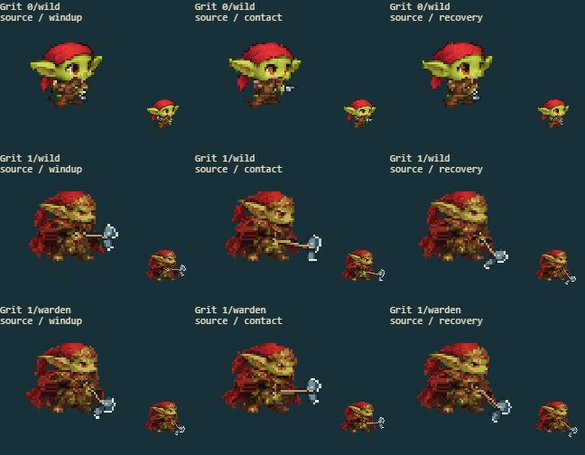
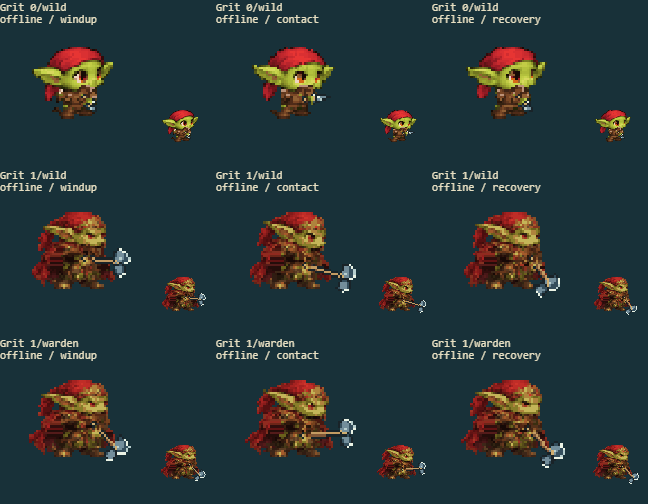

6 separate source/offline fights, covering every available form and path. The right panels show the actual cached sprite drawn in battle, before the hit-flash overlay, at native size and enlarged. The arena panel retains combat effects.
Full delivered-game screenshot · Contact inspection
| Factor | Result | Observed |
|---|---|---|
| Arm and cloth ownership | pass | The red headscarf tails and evolved cape remain garment pixels; leather sleeves and hands move separately. |
| Torso and garment continuity | pass | Scarf, cape and jacket remain filled as the near hand swings across the front of the costume. |
| Grip contact | pass | The axe and base blade stay attached to the source hand through windup, contact and recovery. |
| Original clothing and palette | pass | Red scarf edges, green skin and brown bandolier keep the original costume texture in both builds. |
| Motion and cell bounds | pass | Scarf tails remain attached at the neck and the cape hem stays with the garment through travel, attacks and falls. |


Original/current anatomy in all eight facings: authored form 0 · authored form 1 · authored form 2